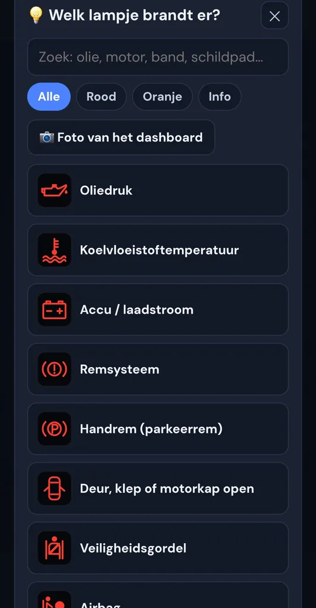
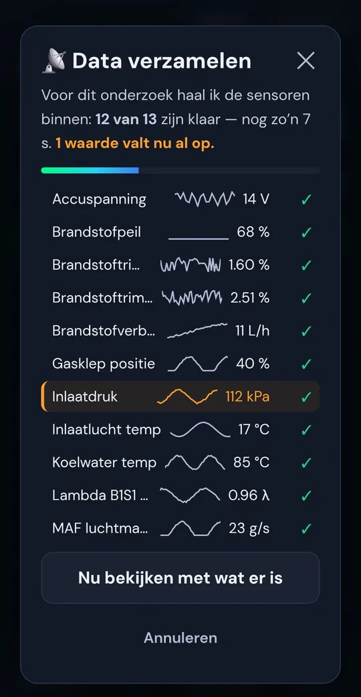
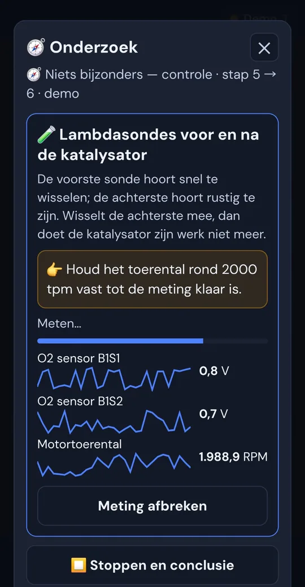
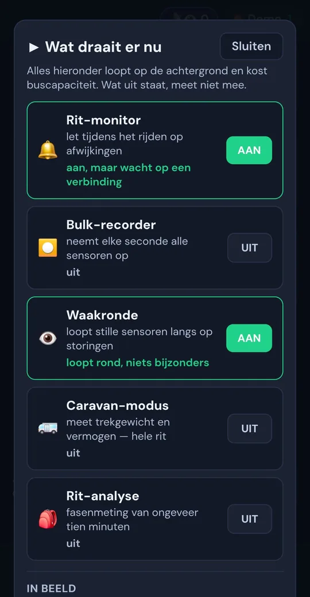
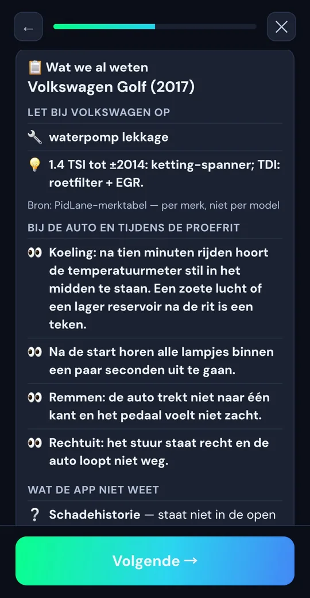
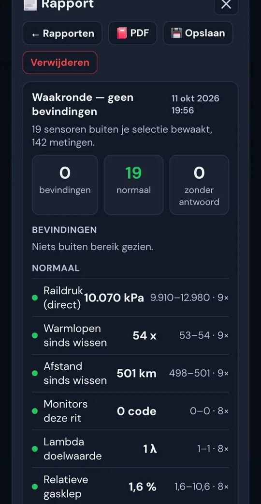

Je monteur kijkt live mee. Waar hij ook is.
Steek een adapter in de OBD2-poort, deel een code, en je monteur of een kenner ziet op zijn eigen scherm live wat jouw auto meet. Hij vraagt zelf de foutcodes op en kiest welke sensoren hij volgt — alleen lezen, niets op afstand veranderd. En PidLane zelf zoekt ondertussen mee naar de oorzaak, in gewone taal.
Android · of Chrome op je laptop · probeer alles eerst met een gesimuleerde auto
Jij bij de auto. De expert op zijn eigen scherm.
Tik op Laat iemand meekijken en deel de code, QR of link — voorlezen, scannen of via WhatsApp. De ander tikt op Ik ben de expert en ziet live dezelfde meters, vraagt zelf de foutcodes op en zet de sensoren aan die hij wil zien. Hij heeft geen adapter nodig. Voor de storing die alleen onderweg optreedt, de garage die ver weg zit, of de occasion die je samen beoordeelt.
Wat de meekijker doet
Zo ziet het eruit. Echt, geen mockup.

Zonder adapter
Welk lampje brandt er?
Kies het lampje of maak een foto van je dashboard. Je hoort meteen of je door kunt rijden.

Uitlezen
Alle sensoren in seconden
Hij haalt binnen wat nodig is en wijst direct aan welke waarde opvalt.

Onderzoek
Hij geeft je opdrachten
"Houd 2000 toeren vast." Gericht meten, stap voor stap, met uitleg waarom.
Conclusie
Oorzaak, bewijs, vervolg
Wat het waarschijnlijk is, waarom, wat je nu doet, en wat is uitgesloten.
Live
Dashboard per categorie
Motor, brandstof, temperaturen: met per groep een oordeel. Compact of ruim, en zelf in te delen.

Onderweg
Waakt terwijl je rijdt
Rit-monitor en Waakronde letten op afwijkingen en nieuwe storingen. Plus een caravan-modus.
Meekijken
Deel met een code
Code, QR of link: je monteur ziet live mee, alleen-lezen, via de beveiligde server.

Koopcheck
Wat je moet checken
Bekende zwakke plekken per merk en een proefrit-lijstje. Eerlijk over wat de app níét weet.

Rapporten
Alles bewaard, als PDF
Elke sessie een rapport bij je voertuig. Handig bij de garage of de verkoop.
Geen lijst met codes. Een monteur die doorvraagt.
Een foutcode zegt waar het pijn doet, niet waarom. Daarom werkt PidLane zoals een goede monteur: kijken, een vermoeden, gericht meten, en pas stoppen als er iets gevonden is.
- Je vertelt wat er speeltLampje, gedrag, geluid. Of gewoon: "er is iets mis".
- Hij leest uit en kijkt waar het afwijktFoutcodes, freeze frame, readiness en de sensoren die er voor jouw auto toe doen.
- Hij meet gericht en stelt vragenStationair, 2000 toeren, warm worden. Kort, met uitleg waarom.
- Conclusie, met bewijsDe waarschijnlijke oorzaak, waarom, de volgende stap, en wat is uitgesloten. Het rapport komt bij je voertuig.
Van "mag ik doorrijden?" tot een complete inkoopcontrole.
Diagnose met AI, in het Nederlands
Elke meting wordt naast de referentie gelegd die bij de toestand hoort: koud of warm, stationair of rijdend. Wat opvalt krijg je te horen met de gemeten waarde erbij, mogelijke oorzaken en een concreet advies.
Kenteken-check
APK, WAM-verzekering, tellerstand (NAP), terugroepacties, import en eigenaar.
Foutcode opzoeken
Wat betekent P0301? In gewone taal, met wat je eraan doet.
Rit-monitor & Waakronde
Let tijdens het rijden op afwijkingen en nieuwe foutcodes, met freeze frame op het moment zelf.
PID-recorder
Kies sensoren, rijd, reproduceer je probleem. De opname gaat mee in de analyse.
Alleen wat jouw auto echt heeft
Geen nep-AdBlue op een benzineauto en geen onzinwaarden: PidLane toetst elke sensor op bestaan en plausibiliteit, en zegt het als data ontbreekt.
APK, onderhoud en terugroep
Seintje 30 en 7 dagen vooraf, en zodra er een nieuwe terugroepactie is voor jouw auto.
Caravan-modus
Meet trekgewicht en vermogen de hele rit, met coaching onderweg en een eindrapport.
Readiness & ECU-tests
Is de auto klaar voor de keuring? Plus de on-board testresultaten van katalysator en lambda.
Voor garages & dealers
Eigen login, inkoopcontrole in vier minuten en een rapport voor het dossier. Meer →
Twee deuren. Kies de jouwe.
Ik koop een auto, of heb er een.
Snap wat de motor zegt, zie of er net foutcodes zijn gewist, en laat je eigen monteur live meekijken terwijl jij bij de verkoper staat.
Voor particulieren →Ik koop in, repareer of verkoop.
Inkoopcontrole in vier minuten, een rapport voor bij het dossier, en uw werkplaats die live meekijkt als de inkoper op locatie staat.
Voor autobedrijven →Drie stappen. Vandaag nog.
Installeer de app
Via Google Play, of open app.pidlane.nl in Chrome. Geen adapter? Kies Simuleer verbinding en probeer alles met een demo-auto.
Adapter in de poort
Een OBD2-adapter met Bluetooth Classic (ELM327 of STN). De poort zit meestal onder het stuur. Contact aan, koppelen, klaar.
Laat meekijken
Tik op Laat iemand meekijken en deel de code met je monteur. Of laat PidLane zelf zoeken: lampje, auto kopen of even checken — het rapport staat bij je voertuig.
Goede vragen.
Heeft de expert die meekijkt een adapter nodig?
Nee. Alleen wie bij de auto staat heeft een adapter. De expert opent PidLane, tikt op Ik ben de expert en typt de code, of opent de link. Hij kan meekijken en foutcodes opvragen, maar niets aan de auto veranderen.
Welke adapter heb ik nodig?
Een OBD2-adapter met Bluetooth Classic (ELM327 of STN, bijvoorbeeld OBDLink MX+ of Vgate vLinker MC+). Adapters die alleen Bluetooth Low Energy kennen werken niet. Aan een laptop kan het ook via USB, in Chrome.
Werkt het met mijn auto?
Vrijwel elke benzineauto vanaf 2001 en diesel vanaf 2004 in Europa heeft een OBD2-poort. Welke sensoren je te zien krijgt verschilt per auto; PidLane laat alleen zien wat jouw auto echt levert.
Werkt het op een iPhone?
Het uitlezen van de auto nog niet: daarvoor is een Android-telefoon nodig, met de app of met Chrome. Meekijken op afstand, de kenteken-check en foutcodes opzoeken werken op elk toestel met een browser.
Wat kost het?
De app is gratis te downloaden en je kunt alles uitproberen met een gesimuleerde auto. Voor AI-analyses gebruik je tegoed; bij registratie krijg je een paar analyses gratis.
Kan ik iets kapot maken?
Nee. Uitlezen verandert niets aan de auto. Foutcodes wissen kan alleen bewust en alleen bij de auto zelf, nooit op afstand.
Je auto praat al. Nu versta je hem ook.
Download PidLane gratis en probeer het meteen, met of zonder adapter.